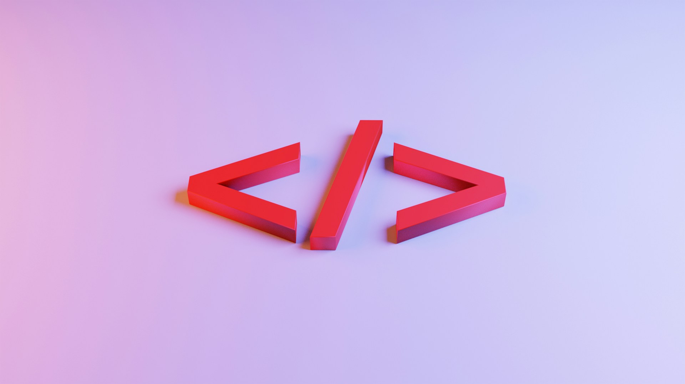
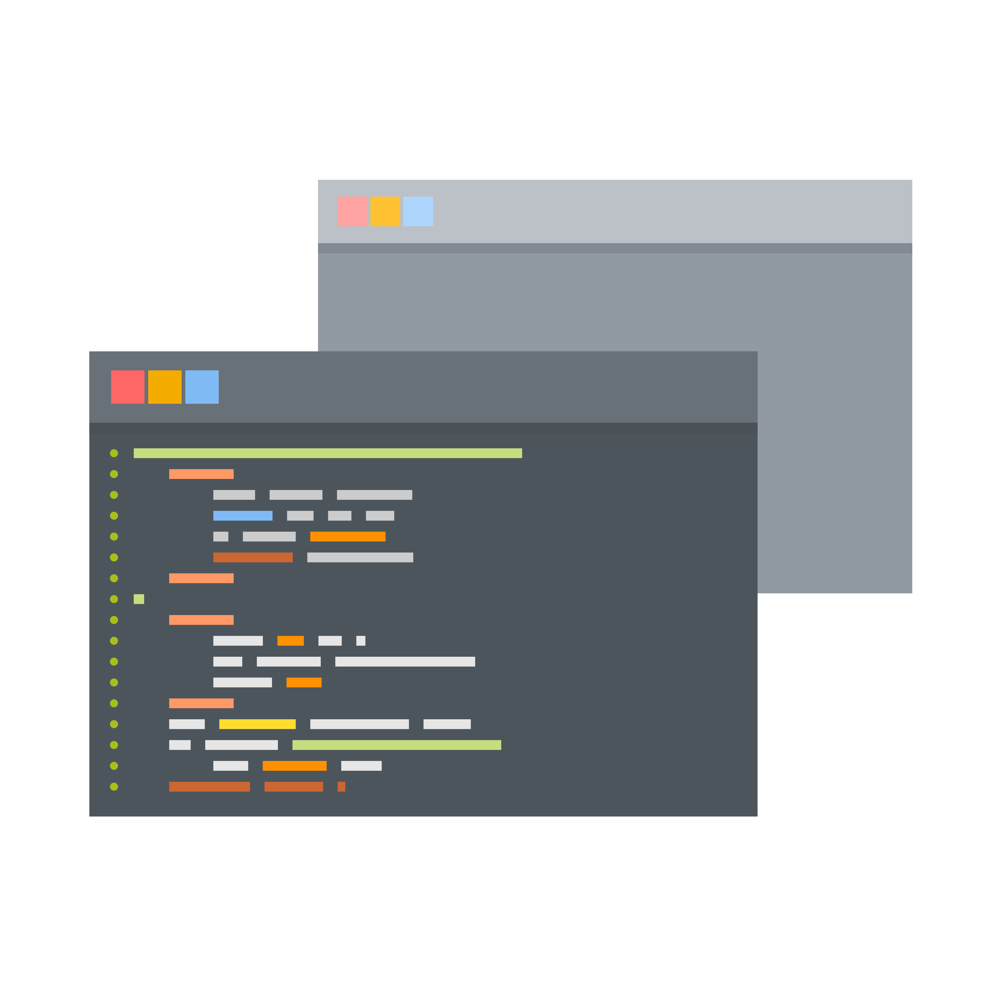
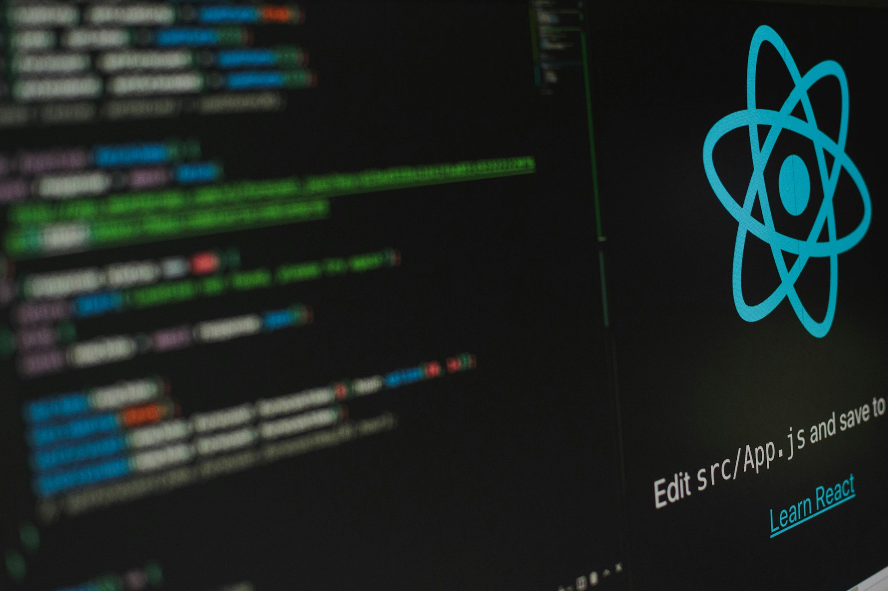
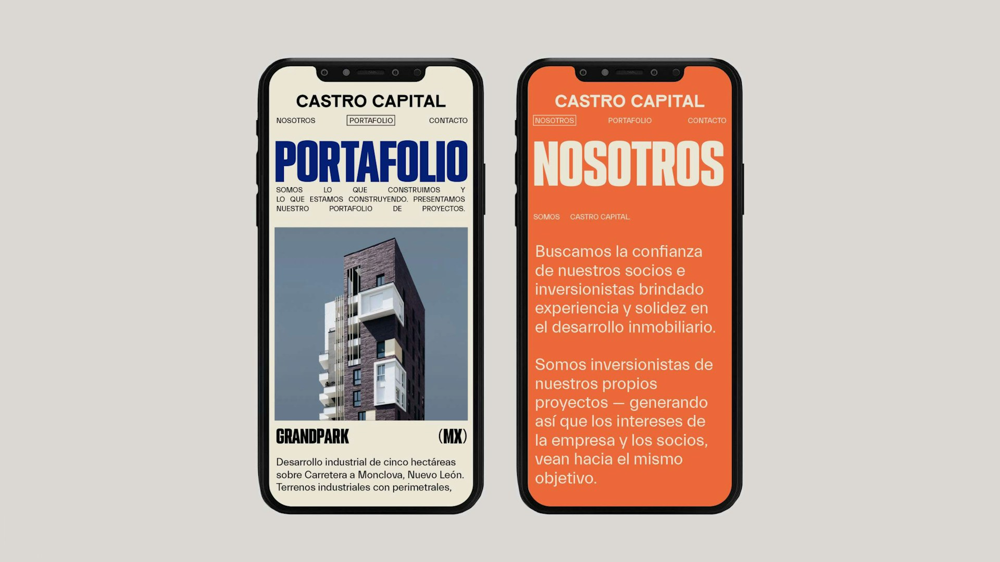

July 23, 2024
How most developers first encounter the web and why structural thinking matters more than visuals in the early stages.

August 02, 2024
A technical breakdown of the three foundational technologies that power modern web applications.

August 15, 2024
An overview of the main web development career paths and the skills each one requires.

September 01, 2024
The essential tools and workflows that support professional web development teams.

September 18, 2024
Why production‑ready projects matter and how they shape a strong developer portfolio.
October 05, 2024
What to expect when transitioning from learning to working as a professional web developer.